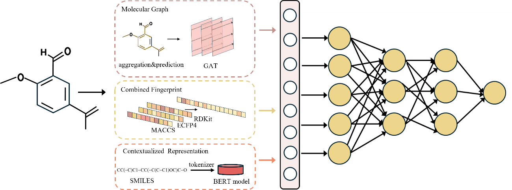
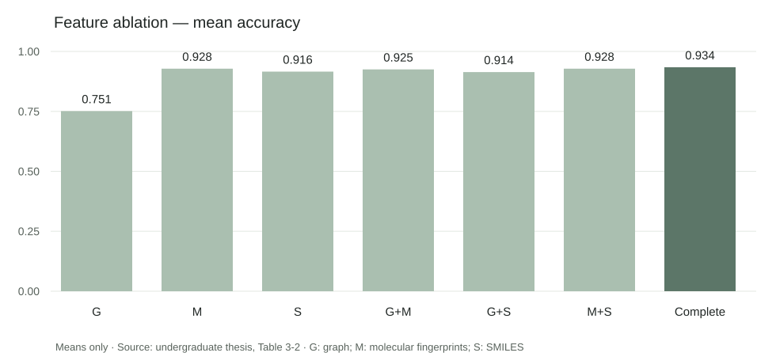
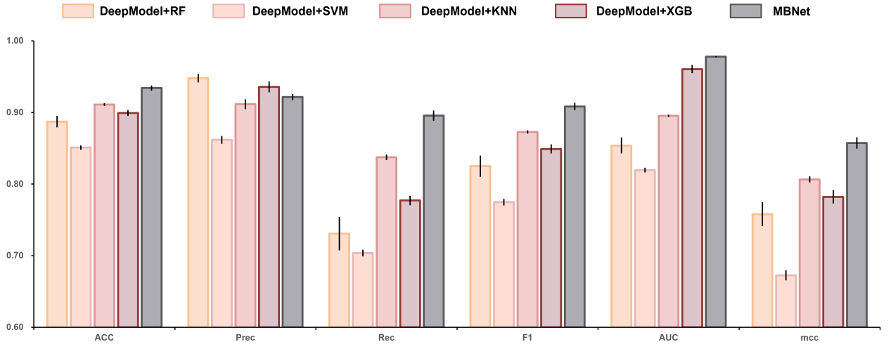

Undergraduate thesis
Multimodal Bitter Compound Prediction
- Reported accuracy
- 0.934
- Reported AUC
- 0.978
A molecular classification workflow combining graph structure, mixed fingerprints and SMILES embeddings to predict bitter compounds. Feature combinations and prediction networks were compared to assess the contribution of each component.
Model overview

Data preparation
Taste labels were integrated from databases and literature. Ambiguous labels were filtered, and compounds were deduplicated using identifiers and canonical SMILES before molecular representations were generated.
Representation & fusion
A graph-attention network encodes molecular topology; MACCS, ECFP4 and RDKit fingerprints represent substructures; pretrained BERT encodes SMILES. Three 256-dimensional vectors are concatenated and projected into a fused representation for classification.
Implementation & evaluation
The Python workflow covers preprocessing, feature generation, model training and evaluation. Ablation experiments compare representation combinations, an additional attention module and alternative prediction classifiers.
Ablation experiments
Two components were varied separately: the molecular representations and the prediction network.
Feature combinations
Which inputs contribute to prediction? Single representations and pairwise combinations were compared with the complete model.

Fingerprints were the strongest single representation. All three inputs gave the highest reported accuracy; adding graph features to either single branch did not consistently improve performance.
Prediction network
Which classifier works with the learned representations? RF, SVM, KNN and XGB variants were compared with the thesis prediction network.

The thesis model reported accuracy of 0.934 and AUC of 0.978. The comparison evaluates the downstream prediction stage within the thesis setup.
Evaluation notes
The thesis assessed the multimodal model using train/validation/test partitioning and repeated evaluation, reporting accuracy of 0.934 and AUC of 0.978. Ablation comparisons explored the roles of molecular representations and downstream classifiers. These figures are presented as results reported in the undergraduate thesis.